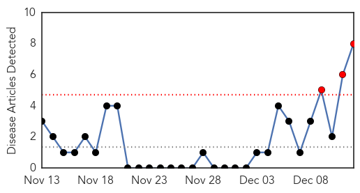

Pertussis
30-Day Web Trend
3 alerts, 0 warnings

30-Day Twitter Trend
0 alerts, 0 warnings

Article Locations

Article Confidences

Top Articles:
- 0.951
- California's worst in 70 years
- 0.947
- HEALTH: Whooping cough epidemic worries officials
- 0.932
- California battles whooping cough epidemic
- 0.920
- California battles whooping cough epidemic
- 0.843
- Large Outbreak of Whooping Cough Seen in California
- 0.808
- Whooping cough on the rise in parts of Maine — Health — Bangor Daily News — BDN Maine
- 0.612
- California battling its worst pertussis epidemic in 70 years
- 0.571
- Kent County whooping cough cases highest since 2010
Top Tweets:
-
No tweets found for Dec 12, 2014